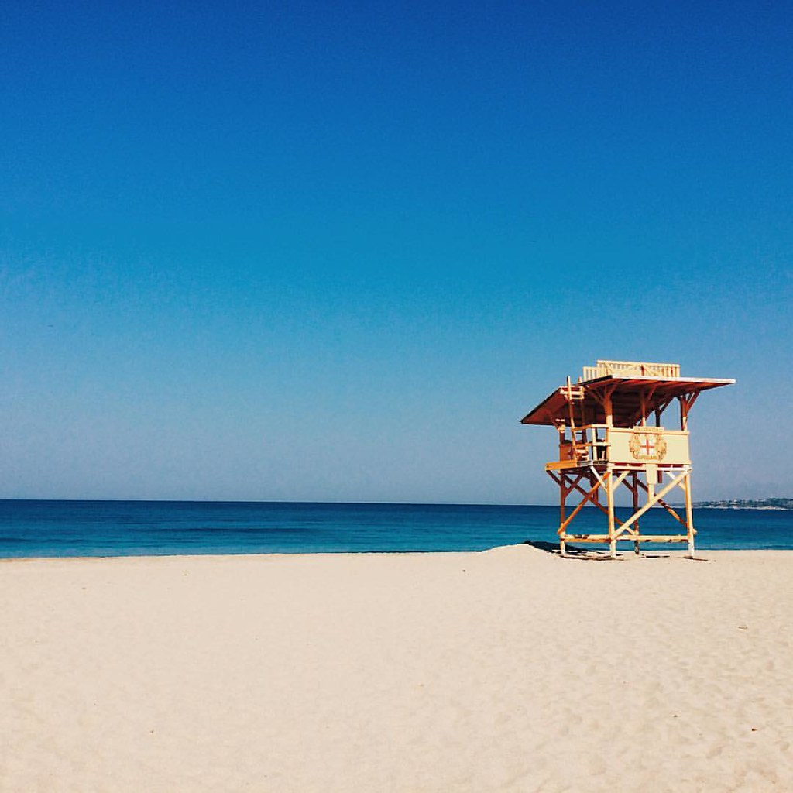

|  |
Playa Zicatela
Es una playa a mar abierto, de gran longitud y con un ancho que varía aproximadamente de 30 a 40 metros. La arena es fina de color gris y pendiente fuerte; el agua templada, cristalina y de tonalidades verdes y azules. El oleaje, en ocasiones, alcanza hasta los 6 metros de altura, ideal para la práctica del surfing.
En esta playa es posible disfrutar de baños de sol y caminatas o la natación, que se recomienda solamente a expertos.Podrá encontrar tiendas de ropa, artesanías, restaurantes, hoteles, cabañas y todo tipo de bares. La vida nocturna se vive intensamente en esta playa. Por las mañanas tome un delicioso café mientras observa practicar a los mejores surfistas del mundo.
| |